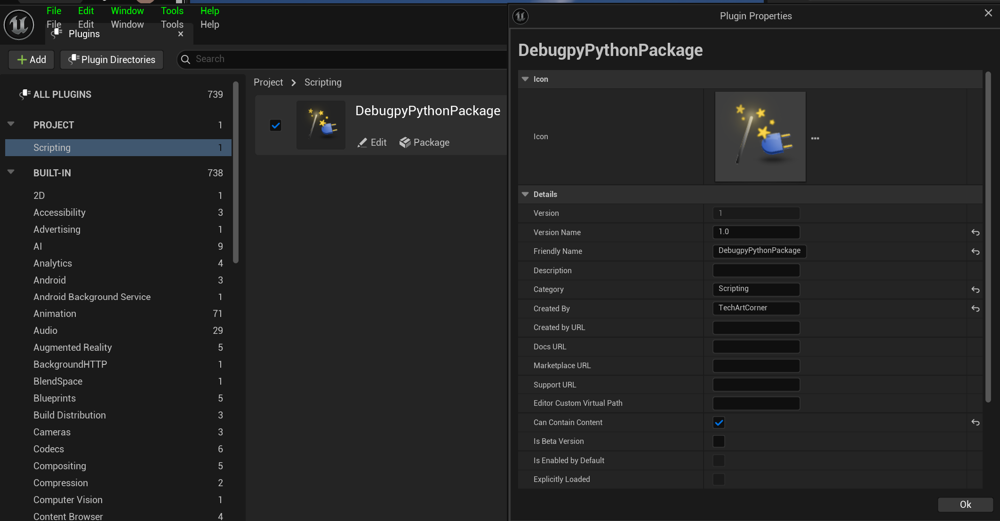
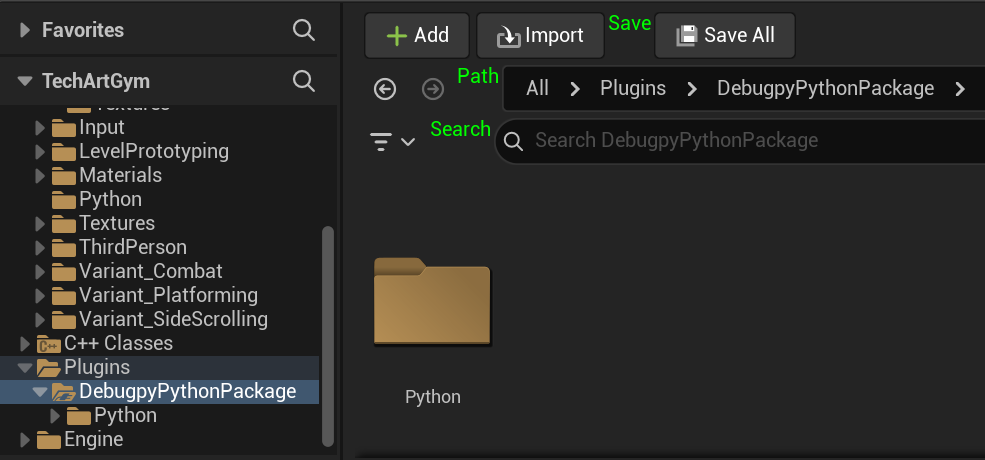
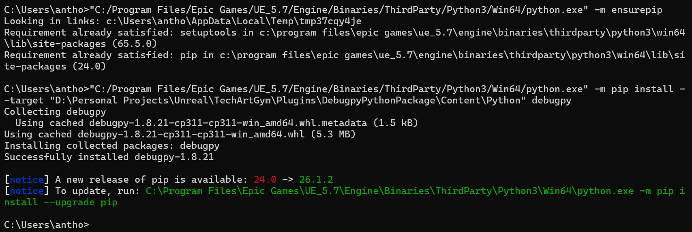
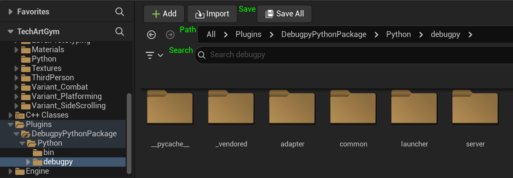
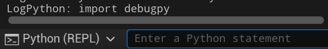
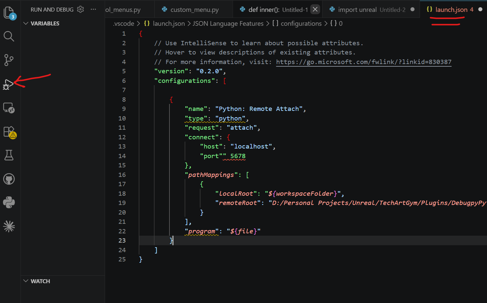
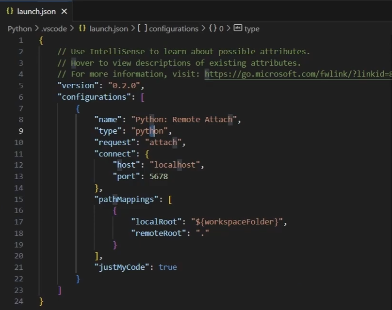
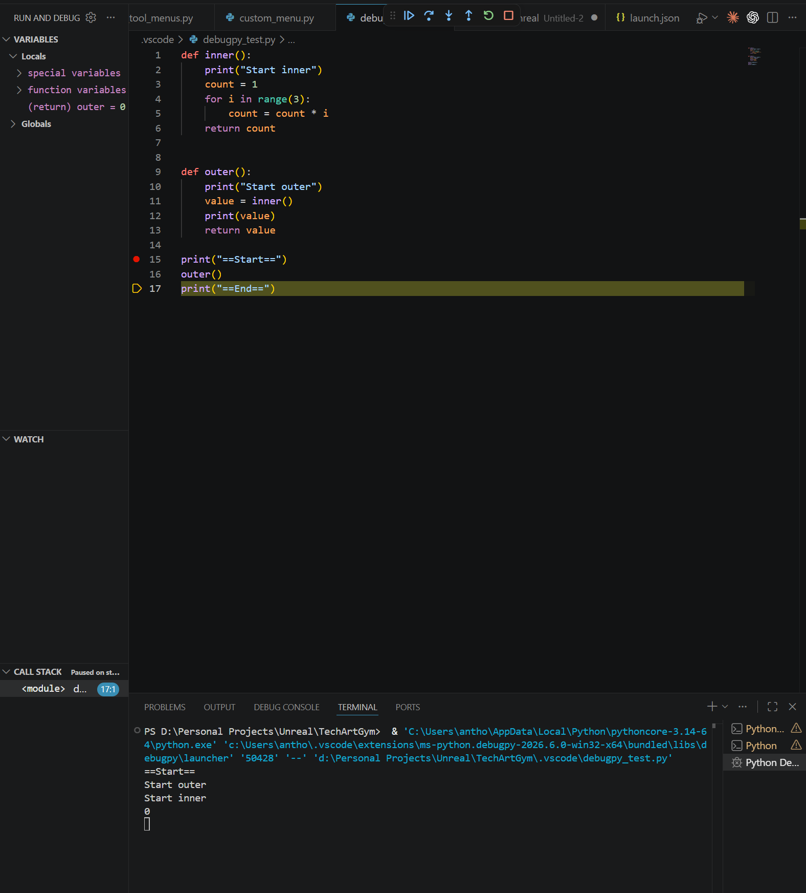

A2 Debugging Python in UE5
Original note · Unmodified Markdown snapshot
https://www.youtube.com/watch?v=IbwLyQtHw_o&list=PLKgYiIAqG99cwlb4Y2Pu-cSb_Vw14-t0c&index=8
Content/Python/debugpy_unreal.py


In unreal cmd line (Python REPL): import unreal unreal.get_interpreter_executable_path() # Output: C:/Program Files/Epic Games/UE_5.7/Engine/Binaries/ThirdParty/Python3/Win64/python.exe
In windows cmd line:


Test:

import debugpy import debugpy_unreal
Create launch.json:

Provided by Unreal:

Final custom launch.json:
{
// Use IntelliSense to learn about possible attributes.
// Hover to view descriptions of existing attributes.
// For more information, visit: https://go.microsoft.com/fwlink/?linkid=830387
"version": "0.2.0",
"configurations": [
{
"name": "UnrealEngine Python",
"type": "debugpy",
"request": "attach",
"connect": {
"host": "localhost",
"port": 5678
},
"pathMappings": [
{
"localRoot": "C:\\Program Files\\Epic Games\\UE_5.7\\Engine\\Plugins\\Experimental\\PythonScriptPlugin\\Content\\Python",
"remoteRoot": "C:\\Program Files\\Epic Games\\UE_5.7\\Engine\\Plugins\\Experimental\\PythonScriptPlugin\\Content\\Python"
},
{
"localRoot": "D:\\Personal Projects\\Unreal\\TechArtGym\\Content",
"remoteRoot": "D:\\Personal Projects\\Unreal\\TechArtGym\\Content"
}
],
"redirectOutput": true,
"justMyCode": false
}
]
}
It's working!
